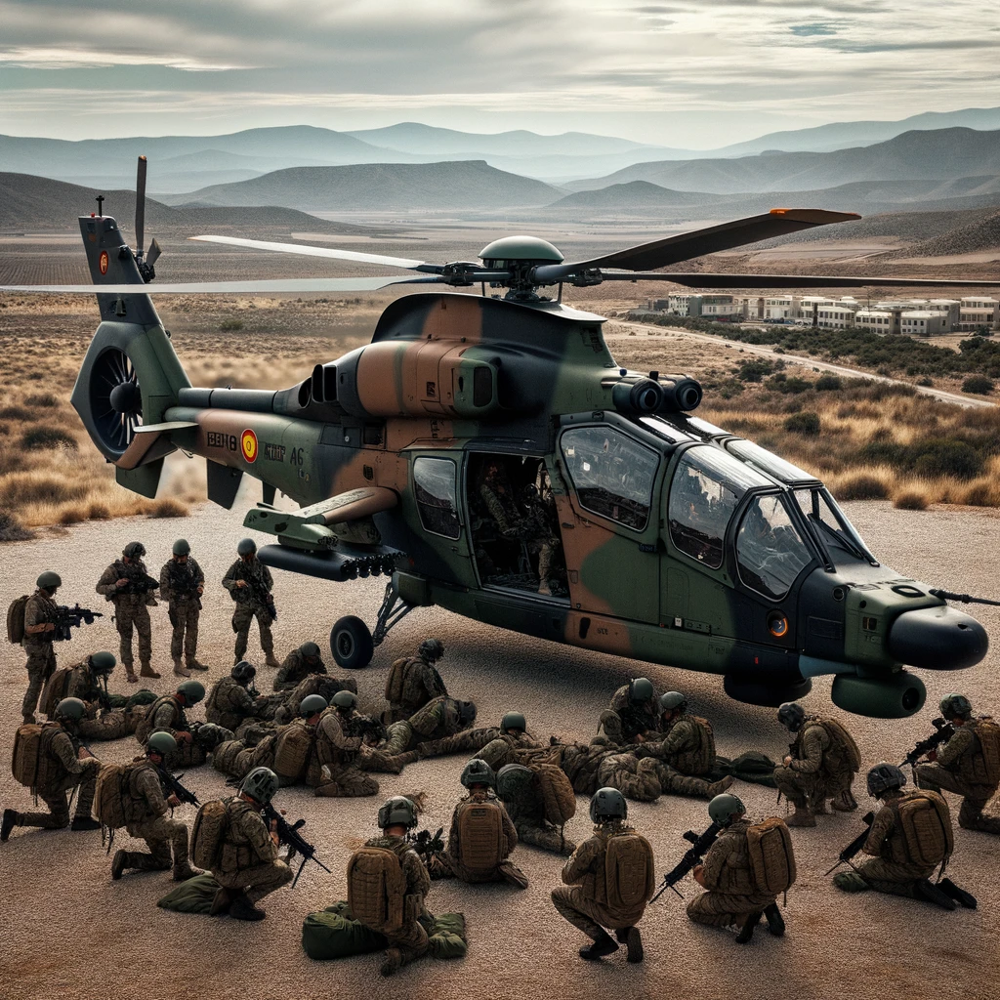

subtitol
L'Eurocopter era una empresa aeroespacial que es va fundar l'any 1992
a partir de la fusió de les divisions d'helicòpters de les empreses
Aerospatiale (França) i Daimler-Benz Aerospace AG (Alemanya). Amb seu
a Marignane, França, l'Eurocopter es va convertir en un dels
principals fabricants d'helicòpters al món. Algunes característiques i
punts destacats de l'Eurocopter: Gamma àmplia: L'Eurocopter va produir
una àmplia gamma d'helicòpters, des de models lleugers fins a models
pesants, tant per a usos civils com militars. Models populars: Alguns
dels models més coneguts i utilitzats de l'Eurocopter són l'EC120,
l'EC135, l'EC145, l'EC225 i l'EC725. Tecnologia innovadora: L'empresa
va ser coneguda per la seva innovació tecnològica, desenvolupant
helicòpters amb tecnologies avançades que milloraven la seguretat,
l'eficiència i el rendiment. Presència global: Malgrat tenir la seva
seu a França, l'Eurocopter va tenir una presència global amb
instal·lacions i clients a tot el món. Canvi de nom: L'any 2014,
l'Eurocopter va canviar el seu nom a "Airbus Helicopters" com a part
de la rebranding d'Airbus Group. Malgrat aquest canvi de nom, molts
encara es refereixen als models d'helicòpters pel seu nom original
d'Eurocopter. Usos diversos: Els helicòpters de l'Eurocopter
s'utilitzen en una gran varietat d'aplicacions, incloent transport de
passatgers, rescat, serveis mèdics d'emergència, logística, missió
militars, entre d'altres. Fiabilitat: L'Eurocopter va guanyar una
reputació per la fiabilitat i seguretat dels seus helicòpters, amb
molts models que es van convertir en estàndards de la indústria en les
seves respectives categories. L'Eurocopter va ser una peça clau en el
desenvolupament i la innovació del mercat mundial d'helicòpters durant
les dècades en què va operar sota aquest nom. Actualment, sota la
marca Airbus Helicopters, l'empresa continua sent un líder en la
indústria aeroespacial.